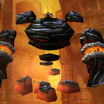
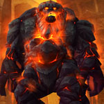
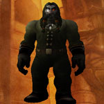

You can find the Blackrock Depths dungeon entrance within Blackrock Mountain, Eastern Kingdoms.
The coordinates are (20.8,38.6)
Click for Dungeon Entrance:

You can enter Blackrock Mountain from two entrances, find them in Burning Steppes or Searing Gorge (Eastern Kingdoms).

Make your way over to the Blackrock Depths summoning stone (located in the middle), you can reach hear by flying over or climbing down the chain.

Head down the long chain and you should see an npc Lothos Riftwaker, run past him and inside take the left side, run all the way through and at the back you will come across the dungeon portal.
Route:
Map 1

Bosses:
1. High Interrogator Gerstahn2. Ring of Law3. Lord Roccor4. Houndmaster Grebmar5. Bael' Gar6. Lord Incendius7. Fineous Darkvire
Quick Boss Tactics:
/i Interrupt Mana Burn. Psychic Scream fears all nearby players. Shadow Word: Pain inflicts player with shadow damage. Boss absorbs damage with Shadow Shield.
/i Interrupt Mana Burn. Psychic Scream fears all nearby players. Shadow Word: Pain inflicts player with shadow damage. Boss absorbs damage with Shadow Shield.
Quick Boss Tactics:
/i You will face waves of mobs, a group of smaller mobs & then 1 difficult mob. This boss is random on what spawns (can be any of 6 different mobs).
/i You will face waves of mobs, a group of smaller mobs & then 1 difficult mob. This boss is random on what spawns (can be any of 6 different mobs).

Quick Boss Tactics:/i Stuns players. Earth Shock inflicts nature damage & interrupts spell casting on a player. Flame Shock burns a player dealing fire damage.
Quick Boss Tactics:
/i Demoralizing Shout reduces attack power of all players. Pummel inflicts physical damage & interrupts spell casting. Uses Bloodlust on an ally. Boss will flee at 15% health.
/i Demoralizing Shout reduces attack power of all players. Pummel inflicts physical damage & interrupts spell casting. Uses Bloodlust on an ally. Boss will flee at 15% health.

Quick Boss Tactics:/i Magma Splash inflicts fire damage to any player who strikes boss with melee attacks, this stacks. Inflicts fire damage to players in random locations, summoning a spawn (red ooze) that attack you.
Quick Boss Tactics:
/i Move out of fire patches on ground. Mighty Blow inflicts physical damage & knocks back. Curses a player reducing fire resistance.
/i Move out of fire patches on ground. Mighty Blow inflicts physical damage & knocks back. Curses a player reducing fire resistance.

Quick Boss Tactics:/i Devotion Aura increases armor of nearby allies. Interrupt Holy Light. Kicks a player inflicting damage. Seal of Reckoning allows boss or an ally to gain health everytime an enemy is struck.